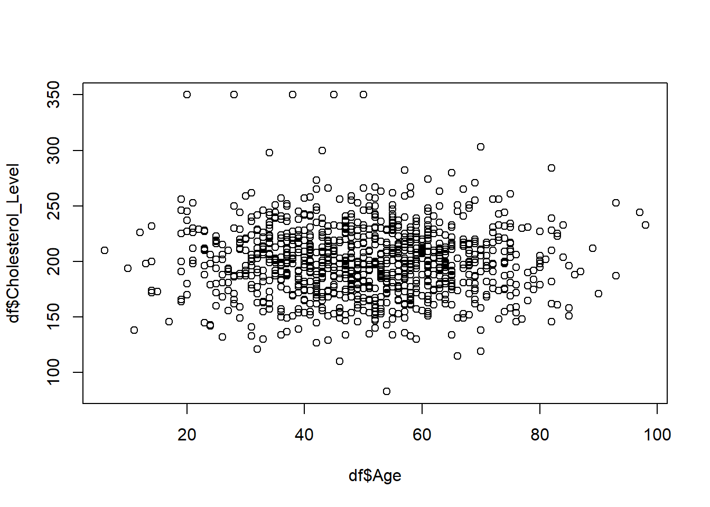
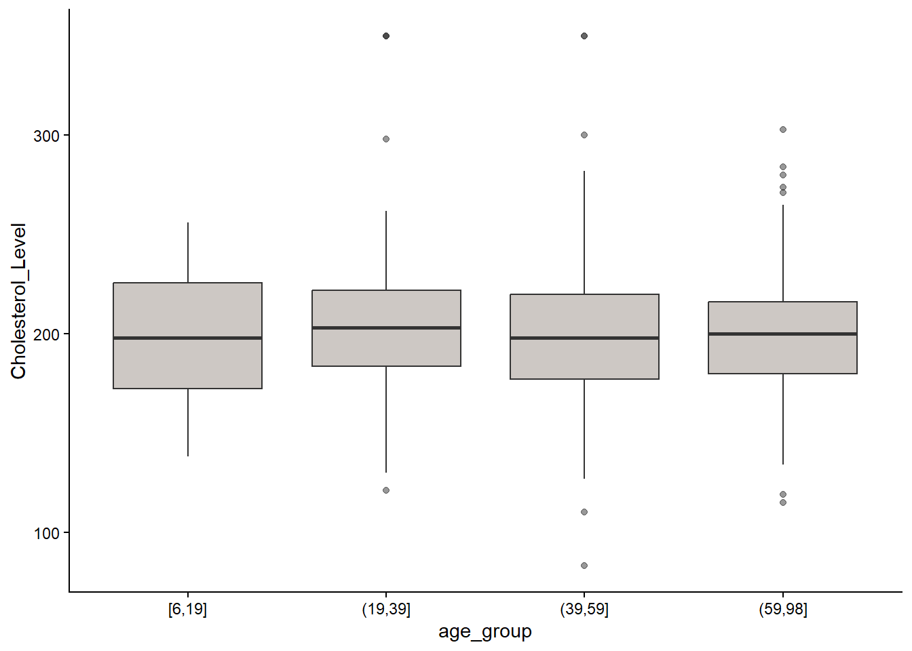
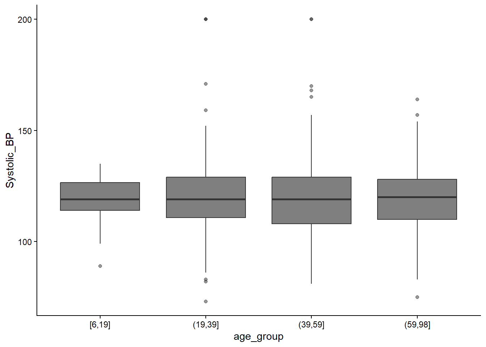
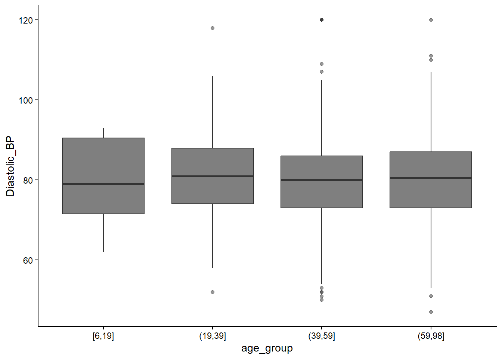

This study used a synthetic clinical trial dataset consisting of 1,000 patients enrolled across multiple study sites. Each patient record included demographic variables (age, gender), clinical measurements (systolic and diastolic blood pressure, cholesterol level), treatment allocation, adverse event counts, and dropout status. Three treatment groups were evaluated: Drug A (CardioX), Drug B (active comparator), and Placebo.
Data Preparation and Cleaning
Missing data: Checked using colSums(is.na()); no missing values were present.
Outliers: Potential outliers in cholesterol levels were identified using the IQR method within age-stratified groups to avoid age-related confounding.
Age grouping: Patients were categorised into four age groups (6–19, 20–39, 40–59, 60–98 years) using the cut() function to support visualisation and subgroup comparisons.
A binary variable hypertension was created to classify patients based on commonly accepted thresholds (≥140 mmHg systolic or ≥90 mmHg diastolic), reflecting individuals likely in need of treatment.
Exploratory Data Analysis
Descriptive statistics and graphical visualisations (bar charts, histograms, scatterplots, and boxplots) were generated using the tidyverse and ggplot2 packages. These visualisations were used to: - Assess treatment group balance - Evaluate distributions of age, blood pressure, and cholesterol - Examine relationships between age, cholesterol level, and blood pressure - Compare blood pressure outcomes across treatment groups - Explore dropout patterns
Statistical Analysis
Group Comparisons
Because blood pressure values were not assumed to be normally distributed, non-parametric tests were used: - Kruskal–Wallis tests were applied to compare systolic and diastolic blood pressure across the three treatment groups. - Pairwise Wilcoxon rank-sum tests with Benjamini–Hochberg correction were used for post-hoc comparisons.
Categorical Outcomes
To compare the proportion of patients with hypertension across treatment groups, a Chi-squared test was conducted using a contingency table of hypertension status by treatment group.
Predictors of Persistent Hypertension
A multivariable logistic regression model was fitted to identify factors associated with remaining hypertensive after treatment. Predictors included: - Treatment group - Age - Gender - Cholesterol level - Number of adverse events
The model was fitted using the glm() function with a binomial link. Multicollinearity was assessed using Variance Inflation Factors (VIF) via the car::vif() function.
Software
All analyses were conducted in R (version 4.5.2). Key libraries included tidyverse, ggplot2, rstatix, and car.
Subject_ID Site_ID Age Gender
Min. : 1.0 Min. : 1.00 Min. : 6.00 Length:1000
1st Qu.: 250.8 1st Qu.:15.00 1st Qu.:39.00 Class :character
Median : 500.5 Median :27.00 Median :51.00 Mode :character
Mean : 500.5 Mean :26.70 Mean :50.45
3rd Qu.: 750.2 3rd Qu.:38.25 3rd Qu.:61.00
Max. :1000.0 Max. :50.00 Max. :98.00
Enrollment_Date Treatment_Group Adverse_Events Dropout
Length:1000 Length:1000 Min. : 0.000 Min. :0.000
Class :character Class :character 1st Qu.: 0.000 1st Qu.:0.000
Mode :character Mode :character Median : 1.000 Median :0.000
Mean : 1.046 Mean :0.161
3rd Qu.: 2.000 3rd Qu.:0.000
Max. :15.000 Max. :1.000
Systolic_BP Diastolic_BP Cholesterol_Level
Min. : 73.0 Min. : 47.00 Min. : 83.0
1st Qu.:109.0 1st Qu.: 73.00 1st Qu.:179.0
Median :119.0 Median : 80.00 Median :200.0
Mean :119.5 Mean : 80.19 Mean :200.3
3rd Qu.:129.0 3rd Qu.: 87.00 3rd Qu.:220.0
Max. :200.0 Max. :120.00 Max. :350.0
Subject_ID: Unique ID for each patient
Site_ID: The location of the study carried out
Age: Each patient’s age
Gender: Male or Female
Enrollment_Date: The date the patient started the treatment
Treatment_group: Drug A(CardioX), Drug B(Active comparator) and Placebo
Adverse_Events: Number of adverse events reported by patients
Dropout: 0 for staying, 1 for dropping out of the study
Systolic BP: Systolic blood pressure (mmHg)
Diastolic_BP: Diastolic blood pressure (mmHg)
Cholesterol_Level: Cholesterol level (mg/dL)
From the summary there are no obvious outliers found. Cholesterol of 350 mg/dL is very high, although it is not impossible for a patient with medical conditions.
There are fairly equal numbers of each treatment group.
Age group
As seen in the summary, the youngest is 6 years old while the oldest patient is 98 years old. The mean age is 50, which is a great age group to conduct the study on.
Age vs Cholesterol Level

Here we will check for outliers for cholesterol level.
The table shows 17 individuals are identified as outliers.

*There are a few overlapping outliers hence total of 14 outlier dots are visible (There are total of 17 outliers)
Age vs Systolic Blood Pressure


Outliers can be seen on both systolic and diastolic blood pressures.
We will separate those who actually have hypertension vs those who do not have hypertension.
https://www.heart.org/en/health-topics/high-blood-pressure/understanding-blood-pressure-readings states that Stage 1 high blood pressure starts from 130/80mmHg, although for this experiment, we will categorise those with more than 140/90mmHg as hypertension. This is because the experiment is to see the effects of the medication, and medications are normally given to those with BP above 140/90mmHg. Those who most definitely needing medications are those with BP more then 140/90mmHg.
Pairwise comparisons using Wilcoxon rank sum test with continuity correction
data: df$Systolic_BP and df$Treatment_Group
Drug A Drug B
Drug B 0.86 -
Placebo 0.86 0.86
P value adjustment method: BH
Kruskal-Wallis test: The large p-value of 0.79 shows that there is no evidence that the median systolic BP differs across different treatment groups. The distributions are statistically similar.
Wilcoxon Pairwise test: - Again the very high p-value shows that no treatment groups significantly differ - All groups have similar systolic BP pressure results,
For diastolic BP:
kruskal.test(Diastolic_BP ~ Treatment_Group, data = df)
Kruskal-Wallis rank sum test
data: Diastolic_BP by Treatment_Group
Kruskal-Wallis chi-squared = 0.22742, df = 2, p-value = 0.8925
Pairwise comparisons using Wilcoxon rank sum test with continuity correction
data: df$Diastolic_BP and df$Treatment_Group
Drug A Drug B
Drug B 0.9 -
Placebo 0.9 0.9
P value adjustment method: BH
Also very high p-values observed.
Chi-squared
To again check the proportion of patients with high BP across different treatment groups.
bp <-matrix(c(80, 231, # Drug A: high, normal87, 239, # Drug B88, 275# Placebo), nrow =3, byrow =TRUE)# Add row/column namesrownames(bp) <-c("DrugA", "DrugB", "Placebo")colnames(bp) <-c("HighBP", "NormalBP")# Chi-square testchisq.test(bp)
Pearson's Chi-squared test
data: bp
X-squared = 0.55219, df = 2, p-value = 0.7587
The very high p-value shows that there is no statistically significant difference between the three treatment groups.
Logistic Regression
This answers the question “Which patient factors predict hypertension even after the treatment?”
model <-glm(hypertension ~ Treatment_Group + Age + Cholesterol_Level + Adverse_Events+ Gender, data = df, family = binomial)summary(model)
Call:
glm(formula = hypertension ~ Treatment_Group + Age + Cholesterol_Level +
Adverse_Events + Gender, family = binomial, data = df)
Coefficients:
Estimate Std. Error z value Pr(>|z|)
(Intercept) -1.626554 0.548004 -2.968 0.0030 **
Treatment_GroupDrug B 0.047951 0.181043 0.265 0.7911
Treatment_GroupPlacebo -0.093418 0.179441 -0.521 0.6026
Age -0.004771 0.004738 -1.007 0.3140
Cholesterol_Level 0.003829 0.002276 1.682 0.0926 .
Adverse_Events 0.031001 0.049146 0.631 0.5282
GenderMale 0.015844 0.145915 0.109 0.9135
---
Signif. codes: 0 '***' 0.001 '**' 0.01 '*' 0.05 '.' 0.1 ' ' 1
(Dispersion parameter for binomial family taken to be 1)
Null deviance: 1135.5 on 999 degrees of freedom
Residual deviance: 1130.7 on 993 degrees of freedom
AIC: 1144.7
Number of Fisher Scoring iterations: 4
The large p-values of Drug B and Placebo show that there is no evidence that Drug A or B reduces hypertension compared to placebo, after adjusting for age, cholesterol, adverse events and gender.
Age: Estimate is a negative value of -0.0048, with p-value of 0.31, meaning older patients are slightly less likely to remain hypertensive, but this is not enough to be meaningful.
Cholesterol: p-value of 0.093 is borderline, but it is not statistically significant enough to conclude that cholesterol increases risk of hypertension remaining.
High p-value for adverse events, and gender indicates there is no relationship between those and hypertension.
After adjusting for other variables, none of the treatments show a statistically significant effect on whether hypertension remains after treatment. i.e. Between the treatments there are no significant differences (Drug A/B vs Placebo).
From the Kruskal-Wallis and Chi-squared results, we can conclude that the treatment groups are very similar. This means that any observed differences in the future are due to the treatments themselves and are not due to pre-existing conditions.
The logistic regression did not show any variables as statistically significant in predicting hypertension remaining. Cholesterol is marginally significant, meaning that higher cholesterol levels might slightly increase the odds of remaining hypertension.
This had been quite obvious from the beginning when we observed that placebo group had almost the same percentage of patients with reduced hypertension compared with those on Drug A and B.
This concludes that Drug A and B are just as effective as placebo.
This dataset is great for a simple clinical analysis report. The dataset was simple, so a more comprehensive data, for example, including variables such as pre- and post- treatment blood pressure, heart rate, other underlying medical conditions etc. would have given deeper analysis and more significant results. This is a synthetic dataset though, so for a comprehensive data, a real-life data would be required.